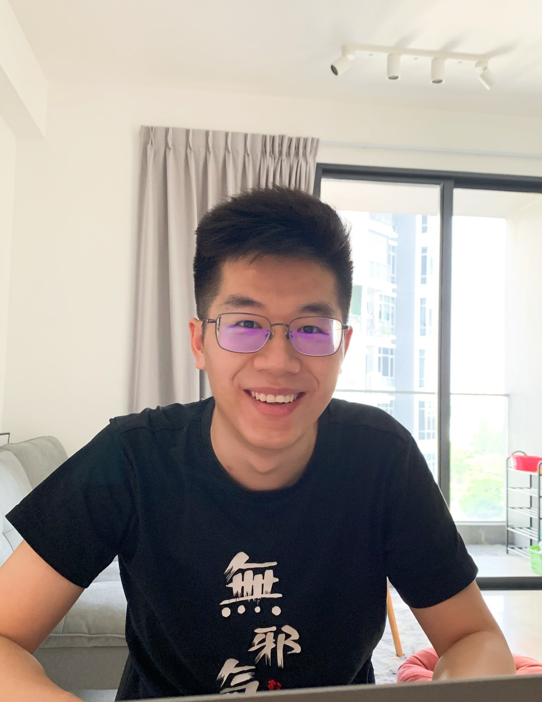

Machine Learning Researcher & Engineer
I'm a researcher and engineer working at the intersection of machine learning, computer vision, NLP and speech technology. My projects span tactile force estimation, expressive multi-speaker TTS, and robust question answering.
I enjoy turning complex ML research into practical systems and exploring how models can perceive and interact with the physical world.
Conducting industrial research on recommendation systems and developing novel SoTA techniques from the literature and shipping them into production models.
Buliding ML models for demand-supply forecasting and optimization, e.g. time-series modelling, reinforcement learning, and deployment in a ride-hailing or delivery context.
Developing machine learning models and data systems for investment purposes, including deep learning NLP, time-series, and more traditional ML and stats problems.
Developed a vision-based approach to estimate contact forces from tactile sensor images, enabling robots to perceive fine-grained physical interactions.
Built a configurable TTS system generating speech from multiple speakers with controllable emotional expression using deep generative models.
Applied stratified bagging and boosting over ALBERT models for question answering, improving robustness and accuracy on challenging NLP benchmarks.
Feel free to reach out if you'd like to collaborate, discuss research, or just say hello.
Based in San Francisco Bay Area. Open to research collaborations, and interesting conversations about AI and robotics.